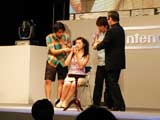

テレビ東京系で放送中の人気番組、『64マリオスタジアム』が、NINTENDOスペースワールド2000にやってきました。ステージが始まると、まず司会の須藤温子さんとあさりどのお二人がごあいさつ。
そのあとに、スペシャルゲストのMr.マリックが例のBGMと共に登場、「マリオではなく、マリックです」というジョークで会場の笑いをとっていました。このあとマリックさんが披露してくれた数々の超魔術のいくつかを、ここでもご紹介しましょう。
|
| 破れた2000円札がもとどおり!? |
会場のお客さんから、先日世に出たばかりの2000円札を借りるマリックさん。なんと、これからこれを破いて元通りにすると宣言。破ったお札の片方をあさりどに握らせ、もう片方をマリックさんが燃やす。すると、あさりどの手の中の2000円札はなんと元通り。マリックさんいわく、お札は燃えたあと、あさりどの手の中に移ったんだとか。会場は騒然、そしてお札を返されたお客さんはホッとしていたのでした。手に入れたばかりの大事な2000円札ですもんね。
|
| コインがワープ!? |
 須藤さんをイスにすわらせ、10円玉1枚と500円玉2枚を握らせるマリックさん。少し離れたところにあるテーブルには、ガラスのコップがおいてあります。マリックさんが須藤さんに気合をかけると、コップがチャリンと音をたてました。そうです、10円玉がワープしたのです。須藤さんが手を開くと、しっかりと10円玉だけが消えていたのでした。
このあとマリックさんは、500円玉の入ったコップを須藤さんの手のひらの上にかざし、500円玉だけを須藤さんの手に落とすという魔術も披露。お金がコップの底を貫通!? ひたすら驚くばかりの須藤さんでした。
|
| 透視の術!? |
客席から3人のお客さんを選び、それぞれにマリックさんの見えないところで紙に好きな文字を書かせます。この紙を、あさりどが折りたたんでホチキスで止め、マリックさんに見えないようにします。マリックさんはこの紙切れの中から１つを選び、書いた人と書いてある文字を、中も開けずにずばり言い当てたのでした。
|
| ポケモンカード神経衰弱 |
みなさんおなじみ、ポケモンカードのエネルギーカード。10組(計20枚)のエネルギーカードを裏向きにならべ、神経衰弱の要領で、マリックさんはズバズバと同じカードを言い当てていきます。マリックさんは、自分のこの力を一般の方にも伝授してあげると宣言、選ばれた3人のお客さんとステージの裏で何やらお話を始めました。このお話の内容は、マリックさんと3人以外には誰にも分かりません。再びステージの上に戻ってきた3人は、すかさず神経衰弱にトライ。みんな、マリックさんとまではいかなくても、けっこうな確率で同じカードを言い当てていくではないですか。なかでも、マリックさんも驚くほど正解率の高かった東京の中学1年生レオンくんには、マリオの金のトロフィーが与えられました。マリックさんに力をさずかったのも、トロフィーをもらったのも、どっちもうらやましいですね。
|
| 最後に…… 〜マリックさんからのメッセージ〜 |
数々の超魔術で会場を盛り上げてくれたマリックさん。最後に、「これからも、人を楽しませるゲームが、任天堂さんからたくさん出てくれるといいですね」と言って、ステージを後にしたのでした。どうもお疲れ様です！
|